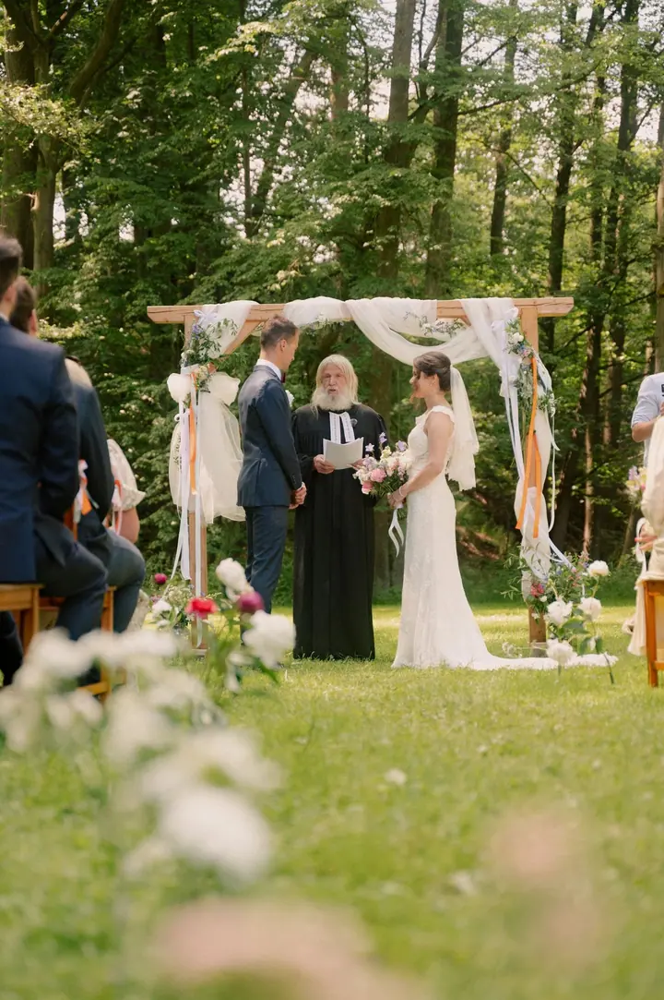
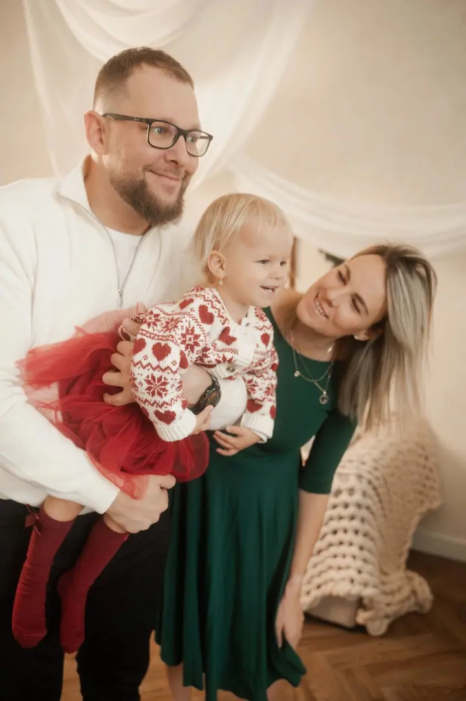
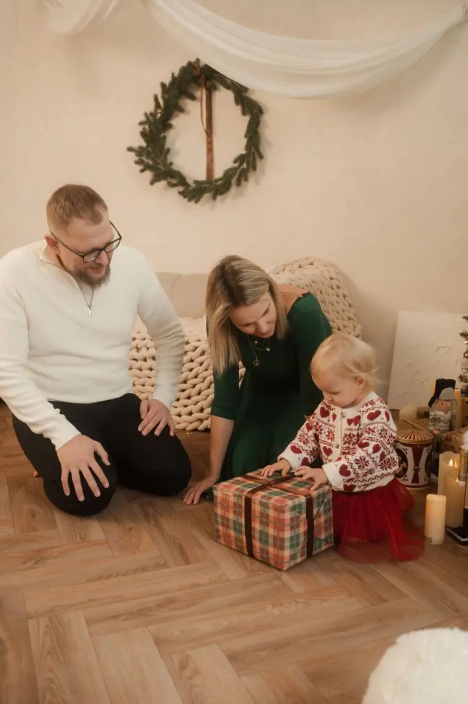

Svatby
Fotím svatby pro páry, které si chtějí svůj den prožít po svém, umí se zasmát samy sobě a nebojí se být hraví. Zapadnu mezi hosty a zachytím dojaté rodiče, výbuchy smíchu i večerní tancovačku.

Jmenuji se Sofie Zbořilová a fotím svatby, rodiny i obyčejná odpoledne lidí, kteří mají rádi přirozenost a neberou se příliš vážně. Nejvíc mi záleží na tom, aby z vás př…
Rezervovat termínJsem Sofie a fotka i video jsou pro mě způsob, jak se vyjádřit, ale taky možnost společně něco vytvořit. Něco hezkého, a zároveň užitečného. Můj styl balancuje na pomezí dokumentární fotky a lifestylu. Zachycuji skutečné momenty, ale záleží mi na tom, aby výsledek měl vkus, čistou estetiku a nepůsobil přeplácaně.


Nebaví mě umělé pózování ani úsměvy na povel. Vím, jaké to je, když na vás někdo namíří foťák a řekne, ať se usmějete, sama jsem s tím měla vždycky problém. Proto vás nebudu stavět do křečovitých póz. Budu vás jemně navádět a soustředit se na to, jací jste. Klidně si na focení vezměte reproduktor nebo někoho blízkého, cokoli, s čím se budete cítit dobře.
Působím hlavně v Brně, Bratislavě a po celé Moravě, ale ráda za vámi vyrazím i jinam. Při výběru fotografa nejde jen o to, kdo má foťák. Mnohem důležitější je, jestli máme stejnou představu a jestli si lidsky sedneme. Na výsledku se to opravdu pozná.
Co fotím
Fotím svatby pro páry, které si chtějí svůj den prožít po svém, umí se zasmát samy sobě a nebojí se být hraví. Zapadnu mezi hosty a zachytím dojaté rodiče, výbuchy smíchu i večerní tancovačku.
Fotím u vás doma, venku nebo v ateliéru, v klidu a bez stresu. Děti si můžou hrát a vy se nemusíte nikam stavět.
Fotit se může úplně každý a já vám s tím pomůžu. Můžeme se jít projít, zajít na kafe a u toho udělat pár fotek. Pokud vám to bude příjemnější, můžeme fotit i ve studiu.
Produktové fotky, byznys portréty, reels a krátká promo videa pro značky s duší. Spolu vymyslíme koncept, který sedne k vaší identitě a ukáže lidskou tvář vašeho podnikání.
Postup
Popište mi svou představu: kdo se bude fotit, zhruba kdy a kde. Společně vybereme termín, lokaci i oblečení.
Před svatbou nebo větším focením si ráda dám krátký videocall nebo zajdu s vámi na kafe, abychom probraly detaily a zjistily, jestli si sedneme.
Portrétní focení trvá zhruba hodinu a probíhá spíš jako pohodová procházka. Domů jdeme, až když jsme všichni spokojení.
Pak se už jen těšíte na hotovou galerii. Fotky si buď vyberete sami z náhledů, nebo vám pošlu všechny, na kterých vám to sluší.
Otázky
Balíček s 15 fotkami, které si sami vyberete z náhledů, stojí 3 000 Kč, každá další fotka 150 Kč. Za 4 200 Kč dostanete všechny povedené fotky, obvykle 40 a víc. Mimo Brno se připočítává doprava 8 Kč/km.
Nabízím dvě varianty: celý příběh na osm hodin, nebo základní momenty pro menší a komornější svatby. Svatební ceník vám ráda pošlu, stačí vyplnit formulář nebo mi napsat e-mail.
Nemusíte mít žádné obavy. Nebudu vás stavět do křečovitých póz, budu vás navádět, ale do ničeho tlačit. Pomůže hudba, blízký člověk po boku nebo pořádné vyspání.
Hlavně to, v čem se cítíte dobře. Skvěle vypadají zemité tóny a přírodní materiály jako len a bavlna, raději se vyhněte velkým nápisům a divokým vzorům. Ráda vám pošlu inspiraci přímo pro vás.
Nejradši fotím venku nebo u vás doma. Ateliér si ale můžeme pronajmout, hodí se při špatném počasí. Pronájem prostoru se platí zvlášť.
Ano, hlavně estetický obsah na sítě: reels, krátká promo videa a spoty pro značky. Ráda vám vymyslím i koncept na míru, cenu nacením podle náročnosti.